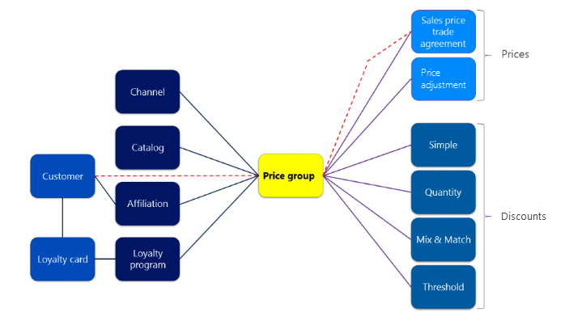

Verwaltung von Einzelhandelsverkaufspreisen
Important
Dynamics 365 Retail ist jetzt Dynamics 365 Commerce und bietet umfassende Handelsfunktionen für alle Kanäle – von E-Commerce über Shops bis hin zu Callcentern. Weitere Informationen zu diesen Änderungen finden Sie unter Microsoft Dynamics 365 Commerce.
Dieses Thema enthält Informationen über den Prozess der Berichterstellung und Verwaltung von Verkaufspreisen in Dynamics 365 Commerce. Es bezieht sich auf die Konzepte, die an diesem Prozess beteiligt sind, und auf die Auswirkungen der verschiedenen Konfigurationsoptionen für Verkaufspreise.
Terminologie
Die folgenden Begriffe werden in diesem Thema erläutert.
| Zeitdauer | Definition, Verwendung und Hinweise |
|---|---|
| Preis | Der einzelne Einheitenbetrag, der ein Produkt in einem Verkaufsstellen (POS)- Client oder einem Auftrag verkauft. In diesem Thema bezieht sich Preis immer den Verkaufspreis, nicht des Lagerpreises oder den Einstandspreis an. |
| Basispreis | Der Preis, der im Feld Preis auf einen gemeinsam verwendete Produktdimensionsgruppe festgelegt wird. |
| Preisgestaltung für Handelsvereinbarung | Der Preis, der auf ein Produkt oder eine Variante festgelegt wird, indem eine Handelsvereinbarung des Typs Preis (Verkauf) verwendet wird. |
| Bester Preis | Wenn mehr als ein Preis oder Rabatt auf ein Produkt angewendet wird, der kleinste oder Preisbetrag und/oder der größte Rabattbetrag, der den niedrigsten Nettobetrag produziert, den der Debitor bezahlen muss, wird angewendet. In diesem Thema gilt das Konzept des besten Preises immer als der beste "Preis". Dieser beste Preis unterscheidet sich vom und sollte nicht mit dem Besten Preis Optionswert für einen Rabattmodus verwechselt werden. |
Preisgruppen
Preisgruppen sind zentral in der Preis- und Rabattverwaltung in Commerce. Preisgruppen werden verwendet, um Preise und Rabatte den Handelseinheiten (d.h. Kanälen, Katalogen, Mitgliedschaften und Treueprogrammen) zuzuordnen. Da Preisgruppen für alle Preise und Rabatte verwendet werden, ist es sehr wichtig, dass Sie planen, wie Sie diese verwenden, bevor Sie beginnen.
An sich ist eine Preisgruppe derzeit ein Name, Beschreibung und optional eine Preiskalkulationspriorität. Der Hauptpunkt, den man sich bei Preisgruppen merken sollte, ist, dass sie zur Verwaltung der Viel-zu-Viel- Beziehungen verwendet werden, die Rabatte und Preise mit Handelseinheiten haben.
Die folgende Abbildung zeigt, wie Preisgruppen verwendet werden. In dieser Grafik beachten Sie, dass "Preisgruppe" buchstäblich in der Mitte der Preiskalkulations- und Rabattverwaltung ist. Die Handelseinheiten, mit denen Sie Differenzpreise und Rabatte verwalten können, befinden sich auf der linken Seite, und die tatsächlichen Preis- und Rabattsätze befinden sich auf der rechten Seite.

Wenn Sie Preisgruppen anlegen, sollten Sie nicht eine einzige Preisgruppe für mehrere Arten von Handelseinheiten verwenden. Andernfalls kann es schwierig sein zu ermitteln, warum ein bestimmter Preis oder ein Rabatt auf eine Buchung angewendet wird.
Wie die rot gestrichelte Linie in der Abbildung zeigt, unterstützt Commerce die zentralen Microsoft Dynamics 365 Funktionen einer Preisgruppe, die direkt auf einen Kunden festgelegt wird. Jedoch in diesem Fall erhalten Sie nur Handelsvereinbarungen. Falls Sie benutzerdefinierte Preise anwenden möchten, sollten Sie nicht festgelegte Preisgruppen direkt für den Debitor definieren. Stattdessen können Sie Zuordnungen verwenden.
Beachten Sie, dass, wenn die Preisgruppe für den Kunden festgelegt ist, diese Preisgruppe dem Kundenauftragskopf der für diesen Kunden erstellten Aufträge zugeordnet wird. Wenn der Benutzer die Preisgruppe im Auftragskopf ändert, wird die alte Preisgruppe nur für die aktuelle Bestellung durch die neue Preisgruppe ersetzt. Beispielsweise wirkt sich die alte Preisgruppe nicht auf die aktuelle Bestellung aus, wird jedoch für zukünftige Bestellungen dem Kunden zugeordnet.
In den folgenden Abschnitten finden Sie weitere Informationen über die Handelseinheiten, mit denen Sie bei der Verwendung der Preisgruppen unterschiedliche Preise festlegen können. Die Variante von Preisen und Rabatten für alle diese Entitäten ist ein Prozess in zwei Schritten. Diese Schritte können in jedem Auftrag vorgenommen werden. Allerdings besteht die logische Reihenfolge darinm, Preisgruppen auf die Entitäten zuerst festzulegen, da dieser Schritt nicht wahrscheinlich eine einmalige Einstellung ist, die bei der Implementierung geleistet wird. Anschließend wenn Preise und Rabatte erstellt werden, können Sie Preisgruppen die auf diesen Preisen und Rabatten basieren, einzeln festlegen.
Benachrichtigungskanäle
In der Handelsbranche ist es sehr typisch, verschiedene Preise in verschiedenen Kanälen zu haben. Die primären zwei Faktoren, die Kanal spezifische Preise beeinflusse, sind Kosten, und lokale Marktlagen.
- Kosten – Je weiter weg ein Kanal von der Produktquelle ist, desto mehr kostet der Bestand eines Produktes. So verfügt beispielsweise Frischware eine begrenzte Haltbarkeit und besondere Produktionsanforderungen (beispielsweise eine Vegetationsperiode). Während des Winters kostet frischer Kopfsalates in den Nordklimata vermutlich mehr als in den südlichen. Klimata Wenn Preise für Kanäle in einem großen geografischen Bereich festgelegt werden soll, müssen Sie wahrscheinlich verschiedene Preise in verschiedenen Kanälen festlegen.
- Lokale Marktlagen – Ein Shop, der über einen direkten Mitbewerber in der gleichen Straße hat ist vermutlich Preis sensitiver als ein Geschäft, dass keinen unmittelbaren Mitbewerber hat.
Zugehörigkeiten
Bei einer Definition einer allgemeinen Zugehörigkeit ist ein Link die Zuordnung zu einer Gruppe. In Commerce sind Zuordnungen Gruppen von Debitoren. Zuordnungen sind ein wesentlich flexibleres Tool für Kundenpreiskalkulation und -Rabatte als das Microsoft Dynamics 365 Kernkonzept von Debitorengruppen und Rabattgruppen. Zuerst kann eine Zugehörigkeit für beide Preise und Rabatte verwendet werden, während Nicht-Einzelhandelpreiskalkulation eine andere Gruppe für jeden Typ Rabatt und Preis ist. Danach kann ein Debitor mehrere Zuordnungen haben, jedoch kann nur eine Nicht-Einzelhandelpreiskalkulationsgruppe dem jeweiligen Typ angehören. Schließlich obwohl Zuordnungen verwendet werden, damit sie einem Debitor zugeordnet sind, müssen beide nicht zwangsläufig zugeordnet sein. Eine ad hoc Zugehörigkeit kann für die anonyme Debitoren am POS verwendet werden. Ein typisches Beispiel eines anonymen Zugehörigkeitsrabatts ist ein Senior- oder Studierenderrabatt, wobei der Kunde einen Rabatt erhält, der momentan durch die Auswahl einer Gruppenmitgliedschaftskarte anzeigt wird.
Obwohl Zuordnungen am häufigsten Rabatten zugeordnet sind, können diese auch verwendet werden, um verschiedene Preisgestaltung festzulegen. Wenn beispielsweise ein Einzelhändler für einen Mitarbeiter verkauft, sollte der der Verkaufspreis ändern, anstatt einen Rabatt zu übernehmen in den normalen Preis. Ein anderes Beispiel ist, ein Einzelhändler, der Einzelkunden und Firmenkunden Preise der Firmenkunden auf Grundlage der Einkaufsvolumen anbietet. Zuordnungen aktivieren diese beiden Szenarien.
Treueprogramme
Hinsichtlich Preise und Rabatte sind Treueprogramme im Allgemeinen derzeit eine Zugehörigkeit, die einen bestimmten Namen hat. Preise und Rabatte können für ein Treueprogramm festgelegt werden, während sie derzeit für eine Zugehörigkeit festgelegt werden können. Allerdings unterscheidet sich die Möglichkeit, dass Kunden Loyalitätspreiskalkulation während einer Buchung oder eines Auftrags zugewiesen wird, von der Methode, mit der sie Zugehörigkeitspreiskalkulation abrufen. Debitoren können die angegebenen Treuepreis abrufen, wenn eine Treuekart einer Buchung hinzugefügt wird. Wenn eine Treuekarte einer Buchung hinzugefügt wird, wird das Treueprogramm auch hinzugefügt. Das Treueprogramm aktiviert dann Sonderpreise und Rabatte.
Ein Treueprogramm kann mehrere Ebenen besitzen, und Rabatte können sich für verschiedene Ebenen unterscheiden. Auf diese Weise können Einzelhändler rasch Debitoren größere Belohnungen geben, ohne dass diese Debitoren in einer speziellen Gruppe manuell zugeordnet werden müssen.
Ein Treueprogramm hat zusätzliche Funktionen mit Ausnahme von Preisen und Rabatten. Allerdings sind sie aus der Perspektive der Preiskalkulation und der Rabatte die gleichen wie Zuordnungen.
Kataloge
Einige Einzelhändler werden die physischen oder virtuellen Kataloge nutzen und diese Preise für fokussierte Debitorengruppen festlegen. Im Rahmen des Geschäftsmodells zum zielgruppenorientierten Marketing zu einem Katalog können diese differenzielle Einzelhändler Preise auf ihren verschiedenen Katalogen festlegen. Microsoft Dynamics 365 unterstützt diese Funktion und erlaubt Ihnen, katalogspezifische Rabatte und -Preise zu definieren, ebenso wie kanalspezifische oder zuordnungsspezifische Rabatte. Wenn Sie einen Katalog ändern, können Sie Preisgruppen dem Katalog, als Sie zuordnen können sie einem Kanal, einer Zugehörigkeit oder einem Treueprogramm zuordnen.
Optimale Verfahren für Preisgruppen
Verwenden Sie eine Preisgruppe nicht für mehrere Entitätstypen. Verwenden Sie stattdessen einen Satz Preisgruppen für Kanäle, einen anderen Satz Zuordnungen oder Preisgruppen für Treueprogramme, usw. Sie können ein Präfix oder ein Suffix im Auftrag der Preisgruppe verwendet, um die unterschiedlichen Arten von Preisgruppen visuell zu gruppieren, die Sie verwenden.
Vermeiden Sie es, Preisgruppen direkt auf einem Debitor festzulegen. Verwenden Sie stattdessen eine Zugehörigkeit. Auf diese Weise können Sie alle Typen von Preisen und Rabatten zuweisen für Debitoren, nicht nur Handelsvereinbarungen.
Preisgestaltungspriorität
An sich ist eine Preiskalkulationspriorität derzeit eine Nummer sowie eine Beschreibung. Preiskalkulationsprioritäten können den Preisgruppen angewendet werden, oder sie können direkt auf Rabatte angewendet werden. Wenn dieser für Preis Prioritäten angegebenen, werden verwendet, wenn sie den Einzelhändler das Prinzip des besten Preis überschreiben, indem die Reihenfolge steuern, in dem die Preise und Rabatte zu Produkten angewendet werden. Eine höhere Preiskalkulationsprioritätsnummer wird vor einer unteren Preiskalkulationsprioritätsnummer ausgewertet. Darüber hinaus wenn ein Preis oder eines Rabatts an irgendeinem Prioritätsnummer, in allen oder an Preisen Rabatte gefunden wird, die untere Prioritätsnummern haben, werden ignoriert.
Preis und Rabatt können von zwei unterschiedlichen Preiskalkulationsprioritäten stammen, da Preisprioritäten für Preise und Rabatte unabhängig gelten.
Um Preiskalkulationspriorität für Preise zu verwenden, müssen Sie eine Preiskalkulationspriorität einer Preisgruppe zuweisen und eine Verkaufspreis-Handelsvereinbarung Preisgruppe für diese erstellt werden.
Die Preiskalkulationsprioritätsfunktion wurde eingegeben, um das Szenario zu unterstützen, in dem ein Einzelhändler höhere Preise in einem bestimmten Geschäft übernehmen möchte, das aus den Shops festgelegt wird. So verfügt beispielsweise ein Einzelhändler definiert regionale Preise für die Ostküste der USA aber möchte höhere Preise für mehrere Produkte in New York Cityshops, da es mehr kostet, um mehrere Produkte im Ort zu verkaufen und/oder weil der lokale Markt einen höheren Preis verträgt.
Wie im Abschnitt „Bester Preis“ dieses Themas beschrieben wurde, wählt das Preisfindungsmodul normalerweise den niedrigeren von zwei Preisen aus. Daher wird der Einzelhändler normalerweise daran gehindert, den höheren der beiden Preisen in einem Shop zu verwenden, der die Ostküste und New York als Preisgruppen hat. Zur Behebung dieses Problems muss der Einzelhändler Preise für jedes Produkt zweimal definieren und Preisgruppen nicht beiden zuweisen. Alternativ musste der Einzelhändler zusätzliche Preisgruppen erstellen, um die Produkte zu suchen, die höhere Preise von Produkten verfügen, die die üblichen, niedrigeren Preisen haben.
Allerdings ermöglicht die Preiskalkulationsfunktion es zu, dass der Einzelhändler eine Preiskalkulationspriorität für Shop-Preise erstellt, die höher als die Preiskalkulationspriorität regionaler Preise ist. Alternativ kann der Einzelhändler eine Preiskalkulationspriorität für Shop-Preise regionaler Preise erstellen und die Standardpreiskalkulationspriorität lassen, die 0 (null )ist. Beide Einstellungen stellen sicher, dass Shop-Preise immer vor regionalen Preise verwendet werden.
Beispiel der Preisgestaltungspriorität
Schauen wir ein Beispiel an, bei dem Shop-Preise andere Preise überschreiben.
Ein nationaler Einzelhändler legt die meisten Preise pro Region fest, und besitzt vier Regionen: Nordosten, Südosten, Mittlerer Westen und Westen. Er hat mehrere Märkte mit hohen Kosten bestimmt, die höhere Preise unterstützen können. Diese Märkte sind in New York City, in Chicago und im San-Francisco Baybereich.
In vorliegenden Beispiel schauen wir die Region Nordosten an. Shop 1 ist in Boston, und Shop 2 ist in Manhattan. Für den Boston-Shop werden zwei Preisgruppen mit dem Kanal verknüpft: Nordosten und Shop 1. Für den Manhatten-Shop werden drei Preisgruppen mit dem Kanal verknüpft: Nordosten, NYC und Shop 2.
Der Einzelhändler legt zwei Preisprioritäten fest: Hohe Kosten besitzen eine Prioritätsnummer von 5, und Shop-Preise hat eine Prioritätsnummer von 10. (Bedenken Sie, dass standardmäßig die Preiskalkulationspriorität 0 [Null]und ein Preis oder Rabatt eine höhere Nummer hat, bevor ein Preis oder einen Rabatt verwendet wird, der eine niedrigere Prioritätsnummer hat). Für die Nordostpreisgruppe wird die Preiskalkulationspriorität am Standardwert 0 (Null) sein. Für die NYC-Preisgruppe wird die Preiskalkulationspriorität auf 5 festgelegt, da New York ein Markt mit hohen Kosten ist. Für die Shop 1 und Shop 2 Preisgruppen, wird die Preiskalkulationspriorität auf 10 festgelegt.
Zwei Produkte, die der Einzelhändler als Produkt 1 verkauft, eine Ware T-Shirt und ein Produkt 2, makrenspezifische Jeans.
| Produkt | Preise Nordosten | NYS Preis: | Shoppreise |
|---|---|---|---|
| T-Shirt | $15 | Nicht festgelegt | Nicht festgelegt |
| Modische Jeans | $50 | $70 | Nicht festgelegt |
Das T-Shirt verkauft sich für denselben Preis (das heißt, $15) in den Boston- und Manhattan-Shops, da nur ein Preis in der Nordostpreisgruppe festgelegt wurde, die beide Kanäle verknüpft. Die modischen Jeans verkaufen sich im Boston-Shop für $50, weil dies der einzige verfügbare Preis im Shop ist. Jedoch im Manhattan-Shop, stehen zwei Preise zu Verfügung: $50 und $70. Da die Preiskalkulationspriorität von 5 für die NYC-Preisgruppe höher ist als die Preiskalkulationspriorität von 0 (null )für die Nordostpreisgruppe ist, wird der Preis im POS-System als Rollup für beide Artikel bezeichnet.
Note
Für jede Preiskalkulationspriorität ist ein vollständiger Durchlauf für die Verkaufslogik des Einzelhandelspreismoduls erforderlich. Um die Leistung der Rabattberechnung der Preis und Rapatte zu verwalten, sollten Sie Preiskalkulationsprioritäten kaum verwenden.
Arten von Preisen
In Microsoft Dynamics 365 können Sie den Preis eines Produkts an drei Stellen festlegen:
- Direkt auf dem Produkt (Basispreis)
- In einer Verkaufspreis-Handelsvereinbarung
- In einer Preisregulierung
Der Handelsvereinbarungs-Basispreis und der Basispreis sind Teil des zentralen Dynamics 365 und sind verfügbar, wenn Sie nicht Commerce verwenden. Die Preisregulierungsfunktionen sind nur im Commerce verfügbar. Der nächste Abschnitt enthält weitere Informationen zu diesen Optionen für das Einrichten von Preisen und beschreibt, wie die Optionen zusammenarbeiten.
Preisfestlegung
Basispreis
Der einfachste Ort, um Preis für ein Produkt festzulegen ist direkt im Produkt. Der Wert, den Sie direkt auf ein Produkt festsetzen, ist häufig als Basispreis für das Produkt gekennzeichnet. Sie legen den Basispreis auf dem Feld Preis auf der Registerkarte Verkaufen der Seite Details für freigegebene Produkte fest. Der Wert, den Sie eingeben, ist in der Unternehmenswährung. Standardmäßig ist der Preis für die Menge " 1 der Maßeinheit (UoM), die im Feld Einheit auf der Registerkarte Verkaufen festgelegt wird. Der tatsächliche Preis je Einheit eines Fertigprodukts basiert auf dem UoM, die Preismenge und die Währung.
Wenn ein Produkt einen Preis für den aufweist, bietet der Basispreis effizienteste Weise an, Preis dieses Produkts zu verwalten. Auch wenn Sie Handelsvereinbarungen zum Festlegen der Preise nutzen, können Sie auch den Basispreis auf einem Produkt festlegen. Wenn Sie keine Handelsvereinbarung Alle verwenden, haben Sie einen Fallback-Preis, der verwendet wird, wenn keine Handelsvereinbarung gilt.
Wenn die Währung eines Kanals von der Firmenwährung abweicht, wird der Basispreis in diesem Kanal durch Währungsumrechnung des auf dem Produkt festgelegten Preises bestimmt.
Obgleich die Preiseinheit kein allgemeines Szenario ist, unterstützt es das Einzelhandelspreismodul. Wenn die Preiseinheit auf einen anderen Wert als 0 (Null) festgelegt ist, ergibt der Preis pro Einheit Preis ÷ Preiseinheit. Wenn der Preis eines Produkts $ 10,00 ist und die Preiseinheit ist 50, ist der Preis für eine Menge von 1 ist $0,20 (= $10.00 ÷ 50).
Verkaufspreis-Handelsvereinbarung
Mit der Handelsvereinbarungserfassung verwenden, können Sie Handelsvereinbarungen für jedes Produkt erstellen. In Microsoft Dynamics 365 gibt es drei Debitorenumfänge für Handelsvereinbarungen: Tabelle, Gruppe und Alle. Der Debitorenumfang bestimmt die Debitoren, die eine bestimmte Verkaufspreis-Handelsvereinbarung gilt.
Eine Handelsvereinbarung zu Verkaufspreisen Tabelle gilt für einen einzelnen Debitor, der direkt in der Handelsvereinbarung festgelegt ist. Dieses Szenario ist kein typisches Business-to-Consumer (B2C)-Szenario. Wenn es der Fall ist, verwendet das Einzelhandelspreismodul Handelsvereinbarungen Tabelle, wenn der Preis bestimmt wird.
Eine Gruppe Verkaufspreis-Handelsvereinbarung ist der Typ, der am häufigsten verwendet wird. Außerhalb des Commerce sind Handelsvereinbarungen Gruppen für eine einfache Debitorengruppe. Allerdings ist im Commerce das Konzept einer Debitorengruppe erweitert worden, damit es eine allgemeine Einzelhandelspreisgruppe ist. Eine Preisgruppe kann einem Einzelhandelskanal, einer Zugehörigkeit, einem Treueprogramm oder einem Katalog zugeordnet werden. Detaillierte Informationen zu Preisgruppen finden Sie im Abschnitt "Preisgruppen" oben in diesem Thema.
Note
Ein Handelsvereinbarungs-Preis wird immer vor dem Basispreis verwendet.
Preisregulierung
Wie der Name sagt, steht er für eine Preisregulierung und wird verwendet, um den Preis zu ändern, der entweder für die Gruppe direkt oder durch eine Handelsvereinbarung festgelegt wurde. Eine Preisregulierung kann verwendet werden, um nur den Preis zu senken, nicht zu erhöhen. Eine Preisregulierung ist der empfohlene Weg für Einzelhändler, um Nachverfolgen zu erstellen und Preisabschläge für seine Produkte über die Zeit zu verwalten.
Es gibt drei Typen Preisregulierungen: Prozentsatz, der Betrag und der Preis. Eine Preisregulierung des Prozentsatzes des Importprozesses oder Betrags auf dem Typ wird immer in einer Verkaufstransaktion angewendet. Es wird jedoch eine Preisregulierung des Preistyps angewendet, wenn der angepasste Preis kleiner ist als der Preis, der festgelegt wurde, indem der Handelsvereinbarungs-Preis oder der Basispreis erfasst wird. Wenn der Preis, der in eine Preisregulierung festgelegt ist, höher ist als der nicht angepasste Preis, wird die Preisregulierung nicht verwendet.
Bestimmen des Preises für ein Produkt in einer Buchung
Die Berechnung des Preises und des Rabatts in einer Buchung verwendet das Prinzip des besten Findens für den besten Preis für den Debitor. Entsprechend dieses Prinzip, wenn mehr als ein Preis gefunden wird, wird der niedrigste Preis verwendet. Darüber hinaus wird die Kombination von Rabatten, die den größten Rabattbetrag für die gesamte Buchung erzeugt, verwendet. In einigen Fällen muss ein kleinerer Rabatt auf einem einzelnen Produkt verwendet werden, sodass zusätzliche Rabatte für andere Produkte in der Buchung angewendet werden können.
Die einzige Ausnahme des Prinzips für den besten Preis für den Debitor fungiert in eine Option für wenig teure Rabatte des Angebots-Sortiments. Diese Option ermöglicht wenig-teure Rabatte, die den Einzelhändler bevorzugen, wenn Produkte ausgewählt und gruppiert werden. Wenn eine Transaktion mehr Produkte enthält, als benötigt werden, um einen Anspruch auf den günstigsten Rabatt zu erlangen, wählt das Einzelhandelspreismodul die Produkte aus, die einen möglichen Preisrabatt für den Debitor erstellen.
Das Preismodul gibt drei Preise für jedes Produkt zurück: Basispreis, der aktive Handelsvereinbarungs-Preis und der aktive Preis.
Der Basispreis ist nur die Eigenschaft im Produkt und entspricht dem gleichen überall.
Auf der Verkaufspreis-Handelsvereinbarung wenn die Option Weitersuchen festgelegt wurde, wird der tiefste Preis auf Ja festgelegt, der für die gültige Artikelverkaufspreis-Handelsvereinbarungen gefunden wird, und als Handelsvereinbarungs-Preis verwendet wird. Handelsvereinbarungen können gefunden werden, indm Sie Preisgruppen oder den Kontocode ALLE verwenden. Alternativ können Handelsvereinbarungen direkt einem Debitor zugewiesen werden. Wenn die Option Weitersuchen auf Nein festgelegt wurde, wird der erste Handelsvereinbarungs-Preis, der gefunden wird, verwendet. Wenn keine Handelsvereinbarungen zu Verkaufspreisen enthalten sind, wird der Handelsvereinbarungs-Preis gleich dem Basispreis festgelegt.
Der aktive Preis wird berechnet, indem der Handelsvereinbarungs-Preis genommen wird und auf die größte Preisanpassung angewendet wird, die für das Produkt gilt. Wenn keine Preisregulierungen gefunden werden oder wenn die berechnete Preis höher ist als der Handelsvereinbarungs-Preis, wird der aktive Preis gleich dem Handelsvereinbarungs-Preis festgelegt. Bedenken Sie, dass Sie den Preis eines Produkts nicht erhöhen können, indem Sie eine Preisregulierung verwenden. Die gültigen Preisregulierungen können Sie nur ermitteln, indem Preisgruppen verwendet werden, die einem Kanal, einem Katalog, einer Zugehörigkeit oder einem Treueprogramm zugewiesen werden.
Kategoriepreisregeln
Die Kategorie-Preisregelfunktion in Commerce gibt Ihnen eine einfache Möglichkeit, neue Handelsvereinbarungen für alle Produkte in einer Kategorie zu erstellen. Diese Funktion kann auch automatisch vorhandene Handelsvereinbarungen für die Produkte in der Kategorie finden und sie ablaufen lassen.
Wenn Sie die Option auswählen, vorhandene Handelsvereinbarungen auslaufen zu lassen, erstellt das System eine neue Handelsvereinbarungserfassung für die Produkte in der Kategorie, die eine aktive Handelsvereinbarung haben. Zuvor muss die Erfassung manuell gebucht werden. Darüber hinaus können die Kategorie-Preisregeln vorhandene Handelsvereinbarungen finden, wenn Sie die gleiche Preisregel verwenden (das heißt, wenn Sie eine neue Preisregel erstellen, für die die gleiche Kategorie verwendet wird, die eingerichtet wurde). Wenn Sie dieselbe Preisregel verwenden, werden die vorhandenen Handelsvereinbarungen nicht ablaufen.
Die Preise können erhöht oder verringert werden, indem Sie die Felder Preisregel und Preisgrundlage der Kategorie-Preisregeln verwenden.
Wählen Sie im Feld Preisregel aus, welchen Typ der Preisänderung zu verwenden ist:
- Aufschlag - ein Prozentsatz der Preisbasis wird verwendet, um den Verkaufspreis zu berechnen. Beispiel: Ein Produkt, das 10,00 kostet und für 15,00 verkauft wird, hat einen Aufschlag von 50 Prozent.
- Gewinn - Ein Prozentsatz des Verkaufspreises, der verwendet wird, um den Gewinn zu berechnen. Beispiel: Ein Produkt, das 10,00 kostet und für 15,00 verkauft wird, hat einen Gewinn von 33,3 Prozent.
- Fester Betrag - Ein Betrag, der der Preisbasis hinzugefügt wird, die verwendet wird, um den Verkaufspreis zu berechnen. Beispiel: Ein Produkt, das 10,00 kostet und für 15,00 verkauft wird, hat einen festen Betrag von 5,00.
Wählen Sie im Feld Preisbasis den Typ des zu ändernden Preises aus.
- Grundkosten - Der Betrag, den der Einzelhändler an den Lieferanten zahlt.
- Grundpreis - Der Verkaufspreis, bevor Handelsvereinbarungen und Preisregulierungen angewendet werden.
- Aktueller Preis - Der Verkaufspreis, nachdem Handelsvereinbarungen und Preisregulierungen angewendet werden.
Um die Preise von verschiedenen Produkten und von verschiedenen Produktkategorien leicht zu aktualisieren, können Sie die ergänzenden Produktkategorien zusammen mit den Kategorie-Preisregeln verwenden.
Optimale Verfahren
Microsoft SQL Server Express wird häufig für Kanaldatenbanken verwendet, um Kosten einzusparen (kostenlos). Beachten Sie, dass SQL Server Express Hardwareeinschränkungen und Grenzen auf Datenvolumen hat. Wenn Sie nicht ordnungsgemäß planen, können Sie die Datengrößenbeschränkungen von SQL Server Express schnell erreichen. Diese Überlegung gilt nicht nur der Preiskalkulation sondern auch auf andere Bereiche des Produkts auf. Nachfolgend sind einige Verfahren, die Ihnen beim Erfüllen der Auflagen, Größe zu reduzieren bei Ihren Daten, helfen kann:
Wenn Sie Handelsvereinbarungen verwenden, sollten Sie die alten Handelsvereinbarungen ablaufen lassen, indem Sie ein Enddatum festlegen. Im Laufe der Zeit hilft dieser Ansatz, die Anzahl der Handelsvereinbarungen zu reduzieren, die in den Kanaldatenbanken aufbewahrt werden. Er hilft zudem, die Datenmenge zu verringern, von denen der Herstellkostenkalkulationsalgorithmus mit arbeiten muss.
Wenn die Preise sich mit Nebenproduktvarianten unterscheiden, nehmen Sie den Produktbasispreis der allgemeinsten Variante. Nutzen Sie dann nur Handelsvereinbarungen für verschiedene Preise, die Ausnahmen sind. Durch diesen Ansatz können Sie die Anzahl der Handelsvereinbarungsdatensätze reduzieren. Da es so einfach ist, Daten in Microsoft Dynamics 365 zu importieren, könnten Sie versucht sein, für jede Variante jedes Produkts eine Handelsvereinbarung zu importieren. Allerdings kann dieser Ansatz dazu führen, viele Handelsvereinbarungen zu produzieren, die denselben Wert besitzen. Daher kann die Größe der Daten leicht erhöht werden.
Commerce verarbeitet Varianten spezifische Preise von dem mit den meisten Angaben zu dem mit den wenigsten Angaben. Wenn eine Produktdimension den Preis nicht beeinträchtigt, müssen Sie keine Handelsvereinbarungen definieren. Beispielsweise ist ein Produkt in drei Farben und vier Größen verfügbar, aber der Preis unterscheidet sich von Größe zu Größe. Wenn eine Handelsvereinbarung für jede Variante definieren wird, erstellen Sie 12 Datensätze. Stattdessen können Sie eine Handelsvereinbarung nur für jede Kombination von Größe definieren und das Farbdimensionsleerzeichen lassen. In diesem Fall erstellen Sie nur vier Datensätze.
Falls nicht jeder Wert einer Dimension einen anderen Preis erzeugt, können Sie eine Handelsvereinbarung für den Produktmaster definieren und alle Produktdimensionen lassen. Definieren Sie dann eine separate Handelsvereinbarung für jeden Dimensionswert, der einen anderen Preis erzeugt. Wenn beispielsweise die XXL-Größe einen höheren Preis hat, aber für alle anderen Größen haben Sie denselben Preis, müssen Sie nur zwei Handelsvereinbarungen haben: eine für den Produktmaster und eine für die XXL-Größe.
Preise, die Preise für Steuer enthalten und solche, die keine Steuer enthalten
Wenn Sie Verkaufspreise in Dynamics 365 festlegen, definieren Sie nicht, ob der Preis den Sie festlegen, Mehrwersteuer einschließt oder nicht. Der Wert ist nur der Preis. Bei der Einstellung Preis einschließlich Verkaufssteuer auf Kanäle können Sie Kanäle jedoch so konfigurieren, dass sie die Steuer in den Preisen entweder enthalten oder ausschließen. Diese Einstellung wird für den Kanal festgelegt und kann auch in einem bestimmten Unternehmen ändern.
Wenn Sie mit den Arten der inklusiven und exklusive Steuern arbeiten, ist es für Sie für Preise ordnungsgemäß außerordentlich wichtig, da der Gesamtbetrag, der vom Debitor bezahlt wird, ändert, wenn die Einstellung Preis enthält Mehrwertsteuer im Kanal geändert wird.
Unterschiede zwischen der Festsetzung von Enzelhandelspreisen und Nicht-Einzelhandelpreiskalkulation
Eine einzelne Modul-Preiskalkulation wird verwendet, um Einzelhandelspreise über alle Kanäle zu berechnen: Callcenter, Einzelhandelsgeschäft und Onlineshops. Das hilft bei der Aktivierung der einheitlichen Geschäftsszenarien.
Die Preisgestaltung ist so konzipiert, dass sie mit Einzelhandelseinheiten statt mit Nicht-Einzelhandelseinheiten funktioniert. Speziell wurde diese so entworfen, dass Preise nach Filiale, nicht nach Lagerort festgelegt werden.
Die Preisfindungs-Engine unterstützt nicht die folgenden Preisfindungsfunktionen:
- Das Festlegen von Preisen nach Standort oder Standort- und Lagerspeicherdimensionen wird nicht unterstützt. Wenn Sie in den Handelsvereinbarungen nur die Standortdimension angeben, ignoriert die Preisfindungsmaschine den Standort und wendet die Handelsvereinbarung auf alle Standorte an. Wenn Sie sowohl Site als auch Warehouse angeben, ist das Verhalten undefiniert/nicht getestet, da erwartet wird, dass Einzelhändler die Store-Preisgruppen verwenden, um die Preise für jedes Store/Warehouse zu steuern.
- Attributbasierte Preisgestaltung wird nicht unterstützt.
- Lieferantenrabatt-Pass-Through wird nicht unterstützt.
- Die Standard-Pricing-Engine für das Supply Chain Management unterstützt die Preisberechnung basierend auf dem Angeforderten Versanddatum und dem Angeforderten Empfangsdatum zusammen mit dem aktuellen Datum. Die Einzelhandelspreise unterstützen diese Werte derzeit jedoch nicht. Der Grund dafür ist, dass Kunden in B2C-Szenarien nicht erwarten, dass der angeforderte Liefertermin den Artikelpreis beeinflusst. In einigen Fällen sind Einzelhändler sowohl im B2B- als auch im B2C-Bereich tätig. Für B2B-Operationen ist es üblich, die Preise basierend auf den Lieferterminen zu ändern. Diese Einzelhändler können Supply Chain Management-Preise für ihr B2B-Geschäft und Einzelhandelspreise für ihr B2C-Geschäft verwenden. Die Einzelhandelspreise werden nur aktiviert, wenn der Anwendungsbenutzer als Callcenter-Benutzer hinzugefügt wird, sodass die Einzelhändler bestimmte Benutzer zuweisen können, die mit der Supply Chain Management Preisgestaltung arbeiten, und einige Benutzer zuweisen können, die mit der Einzelhandelspreisgestaltung funktionieren, d.h. diese Benutzer sollte als Callcenter-Benutzer hinzugefügt werden. Darüber hinaus muss die Eigenschaft Verwenden Sie das heutige Datum zur Berechnung der Preise im Abschnitt Handelsparameter > Preise und Rabatte > Verschiedenes eingeschaltet sein. Auf diese Weise können sie den Wert des verwendeten Debitorenparameters für das angeforderte Versanddatum oder das angeforderte Empfangsdatum für die Supply Chain Management-Preisgestaltung beibehalten. Die Einzelhandelspreise verwenden jedoch weiterhin das heutige Datum für die Preisberechnung.
Außerdem unterstützt nur das Preisfindungssystem die folgenden Preisfindungsfunktionen:
- Der Preis wird auf Grundlage der Produktdimensionen im Auftrag der verschiedenen Preis von der spezifischsten Preisvariante bis zur am wenigsten spezifischen Preisvariante im Produktmaster-Preis festgelegt. Ein Preis, der festgelegt wird, indem zwei Produktdimensionen verwendet werden (beispielsweise Gesamtlayout, Farbe und Größe), die vor einem Preis verwendet werden, der festgelegt wird, indem nur eine Produktdimension verwendet wird (beispielsweise Gesamtlayout, Größe).
- Dieselbe Preisgruppe kann verwendet werden, um Preiskalkulation und Rabatte zu steuern.
Preisberechnung für API-Erweiterungen
Der Preis ist einer der wichtigsten Faktoren, die bei der Einkaufsentscheidung vieler Kunden entscheidend sind. Viele Kunden vergleichen Preise auf verschiedenen Websites, bevor sie einen Kauf tätigen. Zur Sicherstellung dass sie konkurrenzfähige Preise bereitstellen, behalten die Einzelhändler ihre Konkurrenten genau im Blick und führen oft Verkaufsförderungsmaßnahmen durch. Um diese Einzelhändler bei ihrer Kundengewinnung zu unterstützen, ist es sehr wichtig, dass die Produktsuche, die Funktion fürs Durchsuchen und die Seite für Produktdetails die genauesten Preise anzeigen.
In einer bevorstehenden Version von Commerce wird die Anwendungsprogrammierungsschnittstelle (API) GetActivePrices Preise zurückgeben, die einfache Rabatte enthalten (z. B. Einzelpositionsrabatte, die nicht von anderen Artikeln im Warenkorb abhängen). Auf diese Weise sind die Preise, die angezeigt werden, dem tatsächlichen Betrag ziemlich nahe, den Kunden für Artikel bezahlen werden. Diese API wird alle Typen einfacher Rabatte umfassen: zugehörigkeitsbasierte, treuebasierte, katalogbasierte sowie kanalbasierte Rabatte. Darüber hinaus wird die API die Namen und Gültigkeitsinformationen für die angewendeten Rabatte zurückgeben, sodass Einzelhändler eine ausführlichere Beschreibung des Preises bereitstellen können und einen Eindruck der Dringlichkeit vermitteln können, wenn die Gültigkeit des Rabatts bald abläuft.